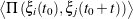
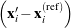
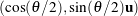
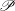

COLLECTIVE VARIABLES MODULE
Reference manual for LAMMPS
September 3, 2015
 Giacomo Fiorin, Jérôme Hénin, Axel Kohlmeyer
Giacomo Fiorin, Jérôme Hénin, Axel Kohlmeyer
Contents
1 Introduction
In today’s molecular dynamics simulations, it is often useful to reduce the large number of degrees of freedom of a
physical system into few parameters whose statistical distributions can be analyzed individually, or used to
define biasing potentials to alter the dynamics of the system in a controlled manner. These have been
called ‘order parameters’, ‘collective variables’, ‘(surrogate) reaction coordinates’, and many other
terms. Here we use primarily the term ‘collective variable’ (shortened to colvar), which indicates any
differentiable function of atomic Cartesian coordinates, xi, with i between 1 and N, the total number of
atoms:
 | (1) |
This manual documents the collective variables module (colvars), a portable software that interfaces multiple MD
simulation programs, with a focus on flexibility, robustness and high performance. The module is
designed to perform multiple tasks concurrently during or after a simulation, the most common of which
are:
- apply restraints or biasing potentials to multiple colvars, tailored on the system by choosing from a
wide set of basis functions, without limitations on their number or on the number of atoms involved;
- calculate potentials of mean force (PMFs) along any set of colvars, using different enhanced sampling
methods, such as Adaptive Biasing Force (ABF), metadynamics, steered MD and umbrella sampling;
variants of these methods that make use of an ensemble of replicas are supported as well;
- calculate statistical properties of the colvars, such as running averages and standard deviations,
correlation functions of pairs of colvars, and multidimensional histograms: this can be done either at
run-time without the need to save very large trajectory files, or after a simulation has been completed
using VMD and the cv command.
To briefly illustrate the flexibility of the colvars module, Figure 1 shows an example of a non-trivial
configuration (the corresponding input can be found in 2.2).
Detailed explanations of the design of the colvars module are provided in reference [1]. Please cite this
reference whenever publishing work that makes use of this module.
2 General parameters and input/output files
Here, we document the syntax of the commands and parameters used to set up and use the collective variables
module in LAMMPS. One of these parameters is the configuration file or the configuration text for the module itself,
whose syntax is described in 2.2 and in the following sections.
2.1 LAMMPS keywords
To enable a collective variables-based calculation, the following line must be added to the LAMMPS configuration
file:
fix ID all colvars configfile keyword value pairs ...
where ID is a string that uniquely identifies this fix command inside a LAMMPS script, configfile is the name of the
configuration file for the collective variables module, followed by one or more of the following optional keywords
with their corresponding arguments:
- input ⟨Name or prefix of the input state file⟩
Context: Keyword of the fix colvars command
Acceptable values: string
Description: If a value is provided, it is interpreted as either the name of the input state file, or
as the prefix of the file named input.colvars.state. This allows to continue a previous collective
variables-based calculation when a regular binary LAMMPS restart file is not available (see 2.3).
- output ⟨Prefix of the output state file⟩
Context: Keyword of the fix colvars command
Acceptable values: string
Default value: “out”
Description: If a value is provided, it is interpreted as the prefix to all output files that will be written
by the collective variables module (see 2.4).
- unwrap ⟨Whether to unwrap coordinates passed to the colvars module⟩
Context: keyword of the fix colvars command
Acceptable values: “yes” or “no”
Default value: “yes”
Description: This keyword controls whether wrapped or unwrapped coordinates are passed to the
colvars module for calculation of the collective variables and of the resulting forces. The default is
to use the image flags to reconstruct the absolute atom positions: under this convention, centers of
mass and centers of geometry are calculated as a weighted vector sum (see 4.3). Setting this to no will
use the current local coordinates that are wrapped back into the simulation cell at each re-neighboring
instead.
- seed ⟨Seed for the random number generator⟩
Context: Keyword of the fix colvars command
Acceptable values: positive integer
Default value: 1966
Description: If defined, the value of this keyword is provided as seed to the random number generator.
This is only meaningful when the extendedLangevinDamping keyword is used (see 3.4).
- tstat ⟨Thermostating fix⟩
Context: Keyword of the fix colvars command
Acceptable values: string
Default value: NULL
Description: This keyword provides the ID of an applicable thermostating fix command. This will
be used to provide the colvars module with the current thermostat target temperature when using a
method that needs this information.
2.2 Configuration syntax for the collective variables module
The syntax of the colvars configuration is “keyword value”, where the keyword and its value are separated by any
white space. The following rules apply:
- keywords are case-insensitive (upperBoundary is the same as upperboundary and UPPERBOUNDARY):
their string values are however case-sensitive (e.g. file names);
- a long value or a list of multiple values can be distributed across multiple lines by using curly braces,
“{” and “}”: the opening brace “{” must occur on the same line as the keyword, following a space
character or other white space; the closing brace “}” can be at any position after that;
- many keywords are nested, and are only meaningful within a specific context: for every keyword
documented in the following, the “parent” keyword that defines such context is also indicated;
- if a keyword requiring a boolean value (yes|on|true or no|off|false) is provided without an
explicit value, it defaults to ‘yes|on|true’; for example, ‘outputAppliedForce’ may be used as
shorthand for ‘outputAppliedForce on’;
- the hash character # indicates a comment: all text in the same line following this character will be
ignored.
The following keywords are available in the global context of the colvars configuration, i.e. they are not nested
inside other keywords:
- colvarsTrajFrequency ⟨Colvar value trajectory frequency⟩
Context: global
Acceptable values: positive integer
Default value: 100
Description: The values of each colvar (and of other related quantities, if requested) are written to
the file output.colvars.traj every these many steps throughout the simulation. If the value is 0,
such trajectory file is not written. For optimization the output is buffered, and synchronized with the
disk only when the restart file is being written.
- colvarsTrajAppend ⟨Append to trajectory file?⟩
Context: global
Acceptable values: boolean
Default value: off
Description: If this flag is enabled, and a file with the same name as the trajectory file is already
present, new data is appended to that file. Otherwise, a new file is created with the same name that
overwrites the previous file.
- colvarsRestartFrequency ⟨Colvar module restart frequency⟩
Context: global
Acceptable values: positive integer
Default value: restartFreq
Description: Allows to choose a different restart frequency for the collective variables module.
Redefining it may be useful to trace the time evolution of those few properties which are not written
to the trajectory file for reasons of disk space.
- indexFile ⟨Index file for atom selection (GROMACS “ndx” format)⟩
Context: global
Acceptable values: UNIX filename
Description: This option reads an index file (usually with a .ndx extension) as produced by the
make_ndx tool of GROMACS. This keyword may be repeated to load multiple index files: the same
group name cannot appear in multiple index files. In LAMMPS, the group2ndx command can be used
to generate such file from existing groups. Note that the collective variables module reads the indices
of atoms from the index file: therefore, the LAMMPS groups do not need to remain active during the
simulation, and could be deleted right after issuing group2ndx. The names of index groups contained
in this file can then be used to define atom groups with the indexGroup keyword. Other supported
methods to select atoms are described in 4.
- analysis ⟨Turn on run-time statistical analysis⟩
Context: global
Acceptable values: boolean
Default value: off
Description: If this flag is enabled, each colvar is instructed to perform whatever run-time statistical
analysis it is configured to, such as correlation functions, or running averages and standard deviations.
See section 3.5 for details.
The example below defines the same configuration shown in Fig. 1. The options within the colvar blocks are
described in 3 and 5, the ones within the harmonic and histogram blocks in 6. Note: except colvar, none of the
keywords shown is mandatory.
colvar {
# difference of two distances
name d
width 0.2 # 0.2 Å of estimated fluctuation width
distance {
componentCoeff 1.0
group1 { atomNumbers 1 2 }
group2 { atomNumbers 3 4 5 }
}
distance {
componentCoeff -1.0
group1 { atomNumbers 7 }
group2 { atomNumbers 8 9 10 }
}
}
colvar {
name c
coordNum {
cutoff 6.0
group1 { atomNumbersRange 1-10 }
group2 { atomNumbersRange 11-20 }
}
}
harmonic {
colvars d c
centers 3.0 4.0
forceConstant 5.0
}
histogram {
colvars c
}
Section 3 explains how to define a colvar and its behavior, regardless of its specific functional form. To define
colvars that are appropriate to a specific physical system, Section 4 documents how to select atoms, and section 5
lists all of the available functional forms, which we call “colvar components”. Finally, section 6 lists the
available methods and algorithms to perform biased simulations and multidimensional analysis of
colvars.
2.3 Input state file (optional)
Aside from the colvars configuration, an optional input state file may be provided to load the relevant data from a
previous simulation. The name of this file is provided as the argument to the input keyword of the fix ID all
colvars command. The same information is stored in the binary restart files of LAMMPS, so it not needed when
continuing a calculation from such a restart.
2.4 Output files
During a simulation with collective variables defined, the following three output files are written:
- a state file, named output.colvars.state; this file is in ASCII format;
- if the parameter colvarsRestartFrequency is larger than zero, a restart file named
restart.colvars.state is written every that many steps: this file is equivalent to the final state file;
- if the parameter colvarsTrajFrequency is greater than 0 (default: 100), a trajectory file is written
during the simulation: its name is output.colvars.traj; unlike the state file, it is not needed to restart
a simulation, but can be used later for post-processing and analysis.
Other output files may be written by specific methods applied to the colvars (e.g. by the ABF method, see 6.1,
or the metadynamics method, see 6.2). Like the colvar trajectory file, they are needed only for analyzing, not
continuing a simulation. All such files’ names also begin with the prefix output.
3 Defining collective variables and their properties
In the configuration file each colvar is defined by the keyword colvar, followed by its configuration options within
curly braces: colvar { ... }. One of these options is the name of a colvar component: for example, including
rmsd { ... } defines the colvar as a RMSD function. In most applications, only one component is used, and the
component is equal to the colvar.
The full list of colvar components can be found in Section 5, with the syntax to select atoms in Section 4.
The following section lists several options to control the behavior of a single colvar, regardless of its
type.
3.1 General options for a collective variable
The following options are not required by default; however, the first four are very frequently used:
- name ⟨Name of this colvar⟩
Context: colvar
Acceptable values: string
Default value: “colvar” + numeric id
Description: The name is an unique case-sensitive string which allows the colvar module to identify
this colvar unambiguously; it is also used in the trajectory file to label to the columns corresponding
to this colvar.
- width ⟨Colvar fluctuation scale, or resolution for grid-based methods⟩
Context: colvar
Acceptable values: positive decimal
Default value: 1.0
Description: This number has the same physical unit as the colvar value and defines an effective
colvar unit. Biasing algorithms use it for different purposes. Harmonic restraints (6.3) use it to set
the physical unit of the force constant, which is useful for multidimensional restraints involving
colvars with different units or scale which may then be defined by a single, scaled force constant.
Histogram (6.6) and ABF biases (6.1) interpret it as the grid spacing in the direction of this variable.
Metadynamics (6.2) uses it to set the width of newly added hills. In other cases, it is simplest to keep
the default value of 1, so that harmonic force constants are provided in their usual physical unit. When
a non-unity width is required by the application, the optimal value is application-dependent, but can
often be thought of as a user-provided estimate of the fluctuation amplitude for the colvar. In those
cases, it should generally be set smaller than or equal to the standard deviation of the colvar during a
very short simulation run.
- lowerBoundary ⟨Lower boundary of the colvar⟩
Context: colvar
Acceptable values: decimal
Description: Defines the lowest end of the interval of “relevant” values for the colvar. This number
can be either a true physical boundary, or a user-defined number. Together with upperBoundary
and width, it is used to define a grid of values along the colvar (not available for colvars based on
distanceDir, distanceVec, and orientation). This option does not affect dynamics: to confine a
colvar within a certain interval, the options lowerWall and lowerWallConstant should be used.
- upperBoundary ⟨Upper boundary of the colvar⟩
Context: colvar
Acceptable values: decimal
Description: Similarly to lowerBoundary, defines the highest possible or allowed value.
- hardLowerBoundary ⟨Whether the lower boundary is the physical lower limit⟩
Context: colvar
Acceptable values: boolean
Default value: off
Description: This option does not affect simulation results, but enables some internal optimizations.
Depending on its mathematical definition, a colvar may have “natural” boundaries: for example, a
distance colvar has a “natural” lower boundary at 0. Setting this option instructs the colvars module
that the user-defined lower boundary is “natural”. See Section 5 for the physical ranges of values of
each component.
- hardUpperBoundary ⟨Whether the upper boundary is the physical upper limit of the colvar’s
values⟩
Context: colvar
Acceptable values: boolean
Default value: off
Description: Analogous to hardLowerBoundary.
- expandBoundaries ⟨Allow to expand the two boundaries if needed⟩
Context: colvar
Acceptable values: boolean
Default value: off
Description: If defined, biasing and analysis methods may keep their own copies of lowerBoundary
and upperBoundary, and expand them to accommodate values that do not fit in the initial range.
Currently, this option is used by the metadynamics bias (6.2) to keep all of its hills fully within the
grid. This option cannot be used when the initial boundaries already span the full period of a periodic
colvar.
3.2 Artificial boundary potentials (walls)
The following options are useful to define restraints (confining potentials) for this colvar. To apply moving restraints,
or restraints to more than one colvar simultaneously, a more convenient option is to use the harmonic bias
(6.3).
- lowerWallConstant ⟨Lower wall force constant (unit of energy specified by units)⟩
Context: colvar
Acceptable values: positive decimal
Description: Defines the force constant for a confining restraint on the colvar, in the form of
a “half-harmonic” potential. The potential starts at lowerWall if it is defined, or lowerBoundary
otherwise. The energy unit of the constant is the unit of energy specified by units, while the spatial
unit U is that of the colvar.
- lowerWall ⟨Position of the lower wall⟩
Context: colvar
Acceptable values: decimal
Default value: lowerBoundary
Description: Defines the value below which a confining restraint on the colvar is applied, in the form
of a “half-harmonic” potential. Allows to use a different position of the wall than lowerBoundary.
- upperWallConstant ⟨Upper wall force constant (unit of energy specified by units)⟩
Context: colvar
Acceptable values: positive decimal
Description: Analogous to lowerWallConstant.
- upperWall ⟨Position of the upper wall⟩
Context: colvar
Acceptable values: decimal
Default value: upperBoundary
Description: Analogous to lowerWall.
3.3 Trajectory output
- outputValue ⟨Output a trajectory for this colvar⟩
Context: colvar
Acceptable values: boolean
Default value: on
Description: If colvarsTrajFrequency is non-zero, the value of this colvar is written to the
trajectory file every colvarsTrajFrequency steps in the column labeled “<name>”.
- outputVelocity ⟨Output a velocity trajectory for this colvar⟩
Context: colvar
Acceptable values: boolean
Default value: off
Description: If colvarsTrajFrequency is defined, the finite-difference calculated velocity of this
colvar are written to the trajectory file under the label “v_<name>”.
- outputEnergy ⟨Output an energy trajectory for this colvar⟩
Context: colvar
Acceptable values: boolean
Default value: off
Description: This option applies only to extended Lagrangian colvars. If colvarsTrajFrequency
is defined, the kinetic energy of the extended degree and freedom and the potential energy of
the restraining spring are are written to the trajectory file under the labels “Ek_<name>” and
“Ep_<name>”.
- outputSystemForce ⟨Output a system force trajectory for this colvar⟩
Context: colvar
Acceptable values: boolean
Default value: off
Description: If colvarsTrajFrequency is defined, the total system force on this colvar (i.e. the
projection of all interatomic forces except constraint forces on this colvar — see equation (15) in
section 6.1) are written to the trajectory file under the label “fs_<name>”. For extended Lagrangian
colvars, the ”system force” felt by the extended degree of freedom is simply the force from the
harmonic spring. Note: not all components support this option. The physical unit for this force is the
unit of energy specified by units, divided by the colvar unit U.
- outputAppliedForce ⟨Output an applied force trajectory for this colvar⟩
Context: colvar
Acceptable values: boolean
Default value: off
Description: If colvarsTrajFrequency is defined, the total force applied on this colvar by biases
and confining potentials (walls) within the colvar module are written to the trajectory under the label
“fa_<name>”. For extended Lagrangian colvars, this force is actually applied to the extended degree
of freedom rather than the geometric colvar itself. The physical unit for this force is the unit of energy
specified by units divided by the colvar unit.
3.4 Extended Lagrangian.
The following options enable extended-system dynamics, where a colvar is coupled to an additional degree of
freedom (fictitious particle) by a harmonic spring. All biasing and confining forces are then applied to the extended
degree of freedom, and the actual, geometric colvar (function of Cartesian coordinates) only feels the force from the
harmonic spring.
- extendedLagrangian ⟨Add extended degree of freedom⟩
Context: colvar
Acceptable values: boolean
Default value: off
Description: Adds a fictitious particle to be coupled to the colvar by a harmonic spring. The
fictitious mass and the force constant of the coupling potential are derived from the parameters
extendedTimeConstant and extendedFluctuation, described below. Biasing forces on the colvar
are applied to this fictitious particle, rather than to the atoms directly. This implements the extended
Lagrangian formalism used in some metadynamics simulations [2].
- extendedFluctuation ⟨Standard deviation between the colvar and the fictitious particle (colvar
unit)⟩
Context: colvar
Acceptable values: positive decimal
Description: Defines the spring stiffness for the extendedLagrangian mode, by setting the
typical deviation between the colvar and the extended degree of freedom due to thermal
fluctuation. The spring force constant is calculated internally as kBT ∕σ2, where σ is the value of
extendedFluctuation.
- extendedTimeConstant ⟨Oscillation period of the fictitious particle (fs)⟩
Context: colvar
Acceptable values: positive decimal
Default value: 200
Description: Defines the inertial mass of the fictitious particle, by setting the oscillation period of the
harmonic oscillator formed by the fictitious particle and the spring. The period should be much larger
than the MD time step to ensure accurate integration of the extended particle’s equation of motion.
The fictitious mass is calculated internally as kBT (τ∕2πσ)2, where τ is the period and σ is the typical
fluctuation (see above).
- extendedTemp ⟨Temperature for the extended degree of freedom (K)⟩
Context: colvar
Acceptable values: positive decimal
Default value: thermostat temperature
Description: Temperature used for calculating the coupling force constant of the extended coordinate
(see extendedFluctuation) and, if needed, as a target temperature for extended Langevin dynamics
(see extendedLangevinDamping). This should normally be left at its default value.
- extendedLangevinDamping ⟨Damping factor for extended Langevin dynamics (ps-1)⟩
Context: colvar
Acceptable values: positive decimal
Default value: 1.0
Description: If this is non-zero, the extended degree of freedom undergoes Langevin dynamics
at temperature extendedTemp. The friction force is minus extendedLangevinDamping times the
velocity. This is useful because the extended dynamics coordinate may heat up in the transient
non-equilibrium regime of ABF. Use moderate damping values, to limit viscous friction (potentially
slowing down diffusive sampling) and stochastic noise (increasing the variance of statistical
measurements). In doubt, use the default value.
3.5 Statistical analysis of collective variables
When the global keyword analysis is defined in the configuration file, run-time calculations of statistical properties
for individual colvars can be performed. At the moment, several types of time correlation functions, running
averages and running standard deviations are available.
- corrFunc ⟨Calculate a time correlation function?⟩
Context: colvar
Acceptable values: boolean
Default value: off
Description: Whether or not a time correlaction function should be calculated for this colvar.
- corrFuncWithColvar ⟨Colvar name for the correlation function⟩
Context: colvar
Acceptable values: string
Description: By default, the auto-correlation function (ACF) of this colvar, ξi, is calculated. When
this option is specified, the correlation function is calculated instead with another colvar, ξj, which
must be of the same type (scalar, vector, or quaternion) as ξi.
- corrFuncType ⟨Type of the correlation function⟩
Context: colvar
Acceptable values: velocity, coordinate or coordinate_p2
Default value: velocity
Description: With coordinate or velocity, the correlation function Ci,j(t) =
 is calculated between the variables ξi and ξj, or their velocities. Π(ξi,ξj) is
the scalar product when calculated between scalar or vector values, whereas for quaternions it is the
cosine between the two corresponding rotation axes. With coordinate_p2, the second order Legendre
polynomial, (3cos(θ)2 -1)∕2, is used instead of the cosine.
- corrFuncNormalize ⟨Normalize the time correlation function?⟩
Context: colvar
Acceptable values: boolean
Default value: on
Description: If enabled, the value of the correlation function at t = 0 is normalized to 1; otherwise,
it equals to  .
.
- corrFuncLength ⟨Length of the time correlation function⟩
Context: colvar
Acceptable values: positive integer
Default value: 1000
Description: Length (in number of points) of the time correlation function.
- corrFuncStride ⟨Stride of the time correlation function⟩
Context: colvar
Acceptable values: positive integer
Default value: 1
Description: Number of steps between two values of the time correlation function.
- corrFuncOffset ⟨Offset of the time correlation function⟩
Context: colvar
Acceptable values: positive integer
Default value: 0
Description: The starting time (in number of steps) of the time correlation function (default: t = 0).
Note: the value at t = 0 is always used for the normalization.
- corrFuncOutputFile ⟨Output file for the time correlation function⟩
Context: colvar
Acceptable values: UNIX filename
Default value: <name>.corrfunc.dat
Description: The time correlation function is saved in this file.
- runAve ⟨Calculate the running average and standard deviation⟩
Context: colvar
Acceptable values: boolean
Default value: off
Description: Whether or not the running average and standard deviation should be calculated for this
colvar.
- runAveLength ⟨Length of the running average window⟩
Context: colvar
Acceptable values: positive integer
Default value: 1000
Description: Length (in number of points) of the running average window.
- runAveStride ⟨Stride of the running average window values⟩
Context: colvar
Acceptable values: positive integer
Default value: 1
Description: Number of steps between two values within the running average window.
- runAveOutputFile ⟨Output file for the running average and standard deviation⟩
Context: colvar
Acceptable values: UNIX filename
Default value: <name>.runave.dat
Description: The running average and standard deviation are saved in this file.
4 Selecting atoms for colvars: defining atom groups
4.1 Selection keywords
To define collective variables, atoms are usually selected by group. Each group is identified by a name that is unique
in the context of the specific colvar component (e.g. for a distance component, the names of the two groups are
group1 and group2). The name is followed by a brace-delimited block of selection keywords: these may be used
individually or in combination with each other, and each can be repeated any number of times. Selection is
incremental: each keyword adds the corresponding atoms to the selection, so that different sets of atoms can be
combined. However, atoms included by multiple keywords are only counted once. Below is an example
configuration for an atom group named “atoms”, which uses an unusually varied combination of selection
keywords:
atoms {
# add atoms 1 and 3 to this group (note: the first atom in the system is 1)
atomNumbers {
1 3
}
# add atoms starting from 20 up to and including 50
atomNumbersRange 20-50
# add index group (requires a .ndx file to be provided globally)
indexGroup Water
}
The resulting selection includes atoms 1 and 3, those between 20 and 50, and those in the index group called
“Water”; the indices of this group are read from the file provided by indexFile, in the global section of the
configuration file.
The complete list of selection keywords available in LAMMPS is:
- atomNumbers ⟨List of atom numbers⟩
Context: atom group
Acceptable values: space-separated list of positive integers
Description: This option adds to the group all the atoms whose numbers are in the list. The number
of the first atom in the system is 1: to convert from a VMD selection, use “atomselect get serial”.
- indexGroup ⟨Name of index group to be used (GROMACS format)⟩
Context: atom group
Acceptable values: string
Description: If the name of an index file has been provided by indexFile, this option allows to
select one index group from that file: the atoms from that index group will be used to define the current
group.
- atomNumbersRange ⟨Atoms within a number range⟩
Context: atom group
Acceptable values: <Starting number>-<Ending number>
Description: This option includes in the group all atoms whose numbers are within the range
specified. The number of the first atom in the system is 1.
- dummyAtom ⟨Dummy atom position (Å)⟩
Context: atom group
Acceptable values: (x, y, z) triplet
Description: Instead of selecting any atom, this option makes the group a virtual particle at a fixed
position in space. This is useful e.g. to replace a group’s center of geometry with a user-defined
position.
4.2 Moving frame of reference.
The following options define an automatic calculation of an optimal translation (centerReference) or optimal
rotation (rotateReference), that superimposes the positions of this group to a provided set of reference
coordinates. This can allow, for example, to effectively remove from certain colvars the effects of
molecular tumbling and of diffusion. Given the set of atomic positions xi, the colvar ξ can be defined
on a set of roto-translated positions xi′ = R(xi - xC)+ xref. xC is the geometric center of the xi, R is
the optimal rotation matrix to the reference positions and xref is the geometric center of the reference
positions.
Components that are defined based on pairwise distances are naturally invariant under global roto-translations.
Other components are instead affected by global rotations or translations: however, they can be made invariant if
they are expressed in the frame of reference of a chosen group of atoms, using the centerReference and
rotateReference options. Finally, a few components are defined by convention using a roto-translated frame (e.g.
the minimal RMSD): for these components, centerReference and rotateReference are enabled by default. In
typical applications, the default settings result in the expected behavior.
- centerReference ⟨Implicitly remove translations for this group⟩
Context: atom group
Acceptable values: boolean
Default value: off
Description: If this option is on, the center of geometry of the group will be aligned with that of
the reference positions provided by refPositions. Colvar components will only have access to the
aligned positions. Note: unless otherwise specified, rmsd and eigenvector set this option to on by
default.
- rotateReference ⟨Implicitly remove rotations for this group⟩
Context: atom group
Acceptable values: boolean
Default value: off
Description: If this option is on, the coordinates of this group will be optimally superimposed to
the reference positions provided by refPositions. The rotation will be performed around the center
of geometry if centerReference is on, around the origin otherwise. The algorithm used is the same
employed by the orientation colvar component [3]. Forces applied to the atoms of this group will
also be implicitly rotated back to the original frame. Note: unless otherwise specified, rmsd and
eigenvector set this option to on by default.
- refPositions ⟨Reference positions for fitting (Å)⟩
Context: atom group
Acceptable values: space-separated list of (x, y, z) triplets
Description: This option provides a list of reference coordinates for centerReference or
rotateReference. If only centerReference is on, the list may contain a single (x, y, z) triplet; if
also rotateReference is on, the list should be as long as the atom group.
- refPositionsGroup ⟨Use an alternate set of atoms to define the roto-translation⟩
Context: atom group
Acceptable values: Block refPositionsGroup { ... }
Default value: This group itself
Description: If either centerReference or rotateReference is defined, this keyword defines an
alternate atom group to calculate the optimal roto-translation. Use this option to define a continuous
rotation if the structure of the group involved changes significantly (a typical symptom would be the
message “Warning: discontinuous rotation!”).
# Example: defining a group "atoms", with its coordinates expressed
# on a roto-translated frame of reference defined by a second group
atoms {
psfSegID PROT
atomNameResidueRange CA 41-48
centerReference yes
rotateReference yes
refPositionsGroup {
# define the frame by fitting the rest of the protein
psfSegID PROT PROT
atomNameResidueRange CA 1-40
atomNameResidueRange CA 49-100
}
refPositionsFile all.pdb # can be the entire system
}
The following two options have default values appropriate for the vast majority of applications, and are only
provided to support rare, special cases.
- enableFitGradients ⟨Include the roto-translational contribution to colvar gradients⟩
Context: atom group
Acceptable values: boolean
Default value: on
Description: When either centerReference or rotateReference is on, the gradients of some
colvars include terms proportional to ∂R∕∂xi (rotational gradients) and ∂xC∕∂xi (translational
gradients). By default, these terms are calculated and included in the total gradients; if this option is
set to off, they are neglected. In the case of a minimum RMSD component, this flag is automatically
disabled because the contributions of those derivatives to the gradients cancel out.
- enableForces ⟨Apply forces from this colvar to this group⟩
Context: atom group
Acceptable values: boolean
Default value: on
Description: If this option is off, no forces are applied from this colvar to this group. Other forces
are not affected (i.e. those from the MD engine, from other colvars, and other external forces). For
dummy atoms, this option is off by default.
4.3 Treatment of periodic boundary conditions.
In simulations with periodic boundary conditions, many of the implemented colvar components rely on the fact that
each position within a group of atoms is at the nearest periodic image from the center of geometry of the group
itself. However, due to the internal wrapping of individual atomic positions done by LAMMPS, this
assumption is inaccurate if groups lies at one of the unit cell’s boundaries. For this reason, within
the colvars module coordinates are unwrapped by default to avoid discontinuities due to coordinate
wrapping (see unwrap keyword in ??). The user should determine whether maintaining the default value
of unwrap, depending on the specifics of each system. In general, internal coordinate wrapping by
LAMMPS does not affect the calculation of colvars if each atom group satisfies one or more of the
following:
- it is composed by only one atom;
- it is used by a colvar component which does not make use of its center of geometry, but only of
pairwise distances (distanceInv, coordNum, hBond, alpha, dihedralPC);
- it is used by a colvar component that ignores the ill-defined Cartesian components of its center of
mass (such as the x and y components of a membrane’s center of mass modeled with distanceZ).
4.4 Computational cost of colvars based on group size.
In parallel MD simulations, the calculation of most interaction terms are spread over many computational nodes, but
the calculation of colvars is not parallelized. Therefore, additional calculations are executed by the node calculating
the colvars, and most importantly, additional communication is added between the first node and the other nodes. To
mitigate that, atom groups should be kept relatively small (up to a few thousands, depending on the computational
cost to simulate the system by itself).
5 Collective variable components (basis functions)
Each colvar is defined by one or more components (typically only one). Each component consists of a keyword
identifying a functional form, and a definition block following that keyword, specifying the atoms involved and any
additional parameters (cutoffs, “reference” values, …).
The types of the components used in a colvar determine the properties of that colvar, and which biasing or
analysis methods can be applied. In most cases, the colvar returns a real number, which is computed by one or more
instances of the following components:
- distance: distance between two groups;
- distanceZ: projection of a distance vector on an axis;
- distanceXY: projection of a distance vector on a plane;
- distanceInv: mean distance between two groups of atoms (e.g. NOE-based distance);
- angle: angle between three groups;
- coordNum: coordination number between two groups;
- selfCoordNum: coordination number of atoms within a group;
- hBond: hydrogen bond between two atoms;
- rmsd: root mean square deviation (RMSD) from a set of reference coordinates;
- eigenvector: projection of the atomic coordinates on a vector;
- orientationAngle: angle of the best-fit rotation from a set of reference coordinates;
- orientationProj: cosine of orientationProj;
- spinAngle: projection orthogonal to an axis of the best-fit rotation from a set of reference coordinates;
- tilt: projection on an axis of the best-fit rotation from a set of reference coordinates;
- gyration: radius of gyration of a group of atoms;
- inertia: moment of inertia of a group of atoms;
- inertiaZ: moment of inertia of a group of atoms around a chosen axis;
Some components do not return scalar, but vector values. They can only be combined with vector values of the
same type.
- distanceVec: distance vector between two groups;
- distanceDir: unit vector parallel to distanceVec;
- cartesian: vector of atomic Cartesian coordinates;
- orientation: best-fit rotation, expressed as a unit quaternion.
In the following, all the available component types are listed, along with their physical units and the limiting
values, if any. Such limiting values can be used to define lowerBoundary and upperBoundary in the parent
colvar.
5.1 List of available colvar components
5.1.1 distance: center-of-mass distance between two groups.
The distance {...} block defines a distance component, between two atom groups, group1 and
group2.
- group1 ⟨First group of atoms⟩
Context: distance
Acceptable values: Block group1 {...}
Description: First group of atoms.
- group2 ⟨Second group of atoms⟩
Context: distance
Acceptable values: Block group2 {...}
Description: Second group of atoms.
- forceNoPBC ⟨Calculate absolute rather than minimum-image distance?⟩
Context: distance
Acceptable values: boolean
Default value: no
Description: By default, in calculations with periodic boundary conditions, the distance component
returns the distance according to the minimum-image convention. If this parameter is set to yes, PBC
will be ignored and the distance between the coordinates as maintained internally will be used. This is
only useful in a limited number of special cases, e.g. to describe the distance between remote points
of a single macromolecule, which cannot be split across periodic cell boundaries, and for which the
minimum-image distance might give the wrong result because of a relatively small periodic cell.
- oneSiteSystemForce ⟨Measure system force on group 1 only?⟩
Context: distance
Acceptable values: boolean
Default value: no
Description: If this is set to yes, the system force is measured along a vector field (see equation (15)
in section 6.1) that only involves atoms of group1. This option is only useful for ABF, or custom
biases that compute system forces. See section 6.1 for details.
The value returned is a positive number (in Å), ranging from 0 to the largest possible interatomic distance within
the chosen boundary conditions (with PBCs, the minimum image convention is used unless the forceNoPBC option
is set).
5.1.2 distanceZ: projection of a distance vector on an axis.
The distanceZ {...} block defines a distance projection component, which can be seen as measuring the distance
between two groups projected onto an axis, or the position of a group along such an axis. The axis can be
defined using either one reference group and a constant vector, or dynamically based on two reference
groups.
- main ⟨Main group of atoms⟩
Context: distanceZ, distanceXY
Acceptable values: Block main {...}
Description: Group of atoms whose position r is measured.
- ref ⟨Reference group of atoms⟩
Context: distanceZ, distanceXY
Acceptable values: Block ref {...}
Description: Reference group of atoms. The position of its center of mass is noted r1 below.
- ref2 ⟨Secondary reference group⟩
Context: distanceZ, distanceXY
Acceptable values: Block ref2 {...}
Default value: none
Description: Optional group of reference atoms, whose position r2 can be used to define a dynamic
projection axis: e = (∥r2 -r1∥)-1 ×(r2 -r1). In this case, the origin is rm = 1∕2(r1 +r2), and the
value of the component is e⋅(r-rm).
- axis ⟨Projection axis (Å)⟩
Context: distanceZ, distanceXY
Acceptable values: (x, y, z) triplet
Default value: (0.0, 0.0, 1.0)
Description: The three components of this vector define (when normalized) a projection axis e for
the distance vector r-r1 joining the centers of groups ref and main. The value of the component is
then e⋅(r-r1). The vector should be written as three components separated by commas and enclosed
in parentheses.
- forceNoPBC ⟨Calculate absolute rather than minimum-image distance?⟩
Context: distanceZ, distanceXY
Acceptable values: boolean
Default value: no
Description: This parameter has the same meaning as that described above for the distance
component.
- oneSiteSystemForce ⟨Measure system force on group main only?⟩
Context: distanceZ, distanceXY
Acceptable values: boolean
Default value: no
Description: If this is set to yes, the system force is measured along a vector field (see equation (15)
in section 6.1) that only involves atoms of main. This option is only useful for ABF, or custom biases
that compute system forces. See section 6.1 for details.
This component returns a number (in Å) whose range is determined by the chosen boundary conditions.
For instance, if the z axis is used in a simulation with periodic boundaries, the returned value ranges
between -bz∕2 and bz∕2, where bz is the box length along z (this behavior is disabled if forceNoPBC is
set).
5.1.3 distanceXY: modulus of the projection of a distance vector on a plane.
The distanceXY {...} block defines a distance projected on a plane, and accepts the same keywords as the
component distanceZ, i.e. main, ref, either ref2 or axis, and oneSiteSystemForce. It returns the norm
of the projection of the distance vector between main and ref onto the plane orthogonal to the axis.
The axis is defined using the axis parameter or as the vector joining ref and ref2 (see distanceZ
above).
5.1.4 distanceVec: distance vector between two groups.
The distanceVec {...} block defines a distance vector component, which accepts the same keywords as the
component distance: group1, group2, and forceNoPBC. Its value is the 3-vector joining the centers of mass of
group1 and group2.
5.1.5 distanceDir: distance unit vector between two groups.
The distanceDir {...} block defines a distance unit vector component, which accepts the same keywords as the
component distance: group1, group2, and forceNoPBC. It returns a 3-dimensional unit vector d = (dx,dy,dz),
with |d| = 1.
5.1.6 distanceInv: mean distance between two groups of atoms.
The distanceInv {...} block defines a generalized mean distance between two groups of atoms 1 and 2, weighted
with exponent 1∕n:
where ∥dij∥ is the distance between atoms i and j in groups 1 and 2 respectively, and n is an even integer. This
component accepts the same keywords as the component distance: group1, group2, and forceNoPBC. In addition,
the following option may be provided:
- exponent ⟨Exponent n in equation 2⟩
Context: distanceInv
Acceptable values: positive even integer
Default value: 6
Description: Defines the exponent to which the individual distances are elevated before averaging.
The default value of 6 is useful for example to applying restraints based on NOE-measured distances.
This component returns a number in Å, ranging from 0 to the largest possible distance within the chosen boundary
conditions.
5.1.7 cartesian: vector of atomic Cartesian coordinates.
The cartesian {...} block defines a component returning a flat vector containing the Cartesian coordinates of
all participating atoms, in the order (x1,y1,z1, ,xn,yn,zn). This component accepts the following
keyword:
,xn,yn,zn). This component accepts the following
keyword:
- atoms ⟨Group of atoms⟩
Context: cartesian
Acceptable values: Block atoms {...}
Description: Defines the atoms whose coordinates make up the value of the component. If
rotateReference or centerReference are defined, coordinates are evaluated within the moving
frame of reference.
5.1.8 angle: angle between three groups.
The angle {...} block defines an angle, and contains the three blocks group1, group2 and group3, defining the
three groups. It returns an angle (in degrees) within the interval [0 : 180].
5.1.9 dihedral: torsional angle between four groups.
The dihedral {...} block defines a torsional angle, and contains the blocks group1, group2, group3 and
group4, defining the four groups. It returns an angle (in degrees) within the interval [-180 : 180]. The
colvar module calculates all the distances between two angles taking into account periodicity. For
instance, reference values for restraints or range boundaries can be defined by using any real number of
choice.
- oneSiteSystemForce ⟨Measure system force on group 1 only?⟩
Context: angle, dihedral
Acceptable values: boolean
Default value: no
Description: If this is set to yes, the system force is measured along a vector field (see equation (15)
in section 6.1) that only involves atoms of group1. See section 6.1 for an example.
5.1.10 coordNum: coordination number between two groups.
The coordNum {...} block defines a coordination number (or number of contacts), which calculates the function
(1-(d∕d0)n)∕(1-(d∕d0)m), where d0 is the “cutoff” distance, and n and m are exponents that can control its
long range behavior and stiffness [2]. This function is summed over all pairs of atoms in group1 and
group2:
This colvar component accepts the same keywords as the component distance, group1 and group2. In addition to
them, it recognizes the following keywords:
- cutoff ⟨“Interaction” distance (Å)⟩
Context: coordNum
Acceptable values: positive decimal
Default value: 4.0
Description: This number defines the switching distance to define an interatomic contact: for d ≪d0,
the switching function (1-(d∕d0)n)∕(1-(d∕d0)m) is close to 1, at d = d0 it has a value of n∕m (1∕2
with the default n and m), and at d ≫ d0 it goes to zero approximately like dm-n. Hence, for a proper
behavior, m must be larger than n.
- cutoff3 ⟨Reference distance vector (Å)⟩
Context: coordNum
Acceptable values: “(x, y, z)” triplet of positive decimals
Default value: (4.0, 4.0, 4.0)
Description: The three components of this vector define three different cutoffs d0 for each direction.
This option is mutually exclusive with cutoff.
- expNumer ⟨Numerator exponent⟩
Context: coordNum
Acceptable values: positive even integer
Default value: 6
Description: This number defines the n exponent for the switching function.
- expDenom ⟨Denominator exponent⟩
Context: coordNum
Acceptable values: positive even integer
Default value: 12
Description: This number defines the m exponent for the switching function.
- group2CenterOnly ⟨Use only group2’s center of mass⟩
Context: coordNum
Acceptable values: boolean
Default value: off
Description: If this option is on, only contacts between each atoms in group1 and the center of mass
of group2 are calculated (by default, the sum extends over all pairs of atoms in group1 and group2).
If group2 is a dummyAtom, this option is set to yes by default.
This component returns a dimensionless number, which ranges from approximately 0 (all interatomic distances
are much larger than the cutoff) to Ngroup1×Ngroup2 (all distances are less than the cutoff), or Ngroup1
if group2CenterOnly is used. For performance reasons, at least one of group1 and group2 should
be of limited size or group2CenterOnly should be used: the cost of the loop over all pairs grows as
Ngroup1×Ngroup2.
5.1.11 selfCoordNum: coordination number between atoms within a group.
The selfCoordNum {...} block defines a coordination number similarly to the component coordNum, but the
function is summed over atom pairs within group1:
The keywords accepted by selfCoordNum are a subset of those accepted by coordNum, namely group1 (here
defining all of the atoms to be considered), cutoff, expNumer, and expDenom.
This component returns a dimensionless number, which ranges from approximately 0 (all interatomic
distances much larger than the cutoff) to Ngroup1×(Ngroup1-1)∕2 (all distances within the cutoff). For
performance reasons, group1 should be of limited size, because the cost of the loop over all pairs grows as
Ngroup12.
5.1.12 hBond: hydrogen bond between two atoms.
The hBond {...} block defines a hydrogen bond, implemented as a coordination number (eq. 3) between the donor
and the acceptor atoms. Therefore, it accepts the same options cutoff (with a different default value of 3.3 Å),
expNumer (with a default value of 6) and expDenom (with a default value of 8). Unlike coordNum, it requires two
atom numbers, acceptor and donor, to be defined. It returns an adimensional number, with values between 0
(acceptor and donor far outside the cutoff distance) and 1 (acceptor and donor much closer than the
cutoff).
5.1.13 rmsd: root mean square displacement (RMSD) from reference positions.
The block rmsd {...} defines the root mean square replacement (RMSD) of a group of atoms with respect to
a reference structure. For each set of coordinates {x1(t),x2(t),…xN(t)}, the colvar component rmsd
calculates the optimal rotation U{xi(t)}→{xi(ref)} that best superimposes the coordinates {xi(t)} onto a
set of reference coordinates {xi(ref)}. Both the current and the reference coordinates are centered on
their centers of geometry, xcog(t) and xcog(ref). The root mean square displacement is then defined
as:
The optimal rotation U{xi(t)}→{xi(ref)} is calculated within the formalism developed in reference [3], which
guarantees a continuous dependence of U{xi(t)}→{xi(ref)} with respect to {xi(t)}. The options for rmsd
are:
- atoms ⟨Atom group⟩
Context: rmsd
Acceptable values: atoms {...} block
Description: Defines the group of atoms of which the RMSD should be calculated. Optimal fit
options (such as refPositions and rotateReference) should typically NOT be set within this
block. Exceptions to this rule are the special cases discussed in the Advanced usage paragraph below.
- refPositions ⟨Reference coordinates⟩
Context: rmsd
Acceptable values: space-separated list of (x, y, z) triplets
Description: This option sets the reference coordinates. If only centerReference is on, the list can
be a single (x, y, z) triplet; if also rotateReference is on, the list should be as long as the atom
group. This option is independent from that with the same keyword within the atoms {...} block
(see 4). The latter (and related fitting options for the atom group) are normally not needed, and should
be omitted altogether except for advanced usage cases.
This component returns a positive real number (in Å).
5.1.14 Advanced usage of the rmsd component.
In the standard usage as described above, the rmsd component calculates a minimum RMSD, that is, current
coordinates are optimally fitted onto the same reference coordinates that are used to compute the RMSD value. The
fit itself is handled by the atom group object, whose parameters are automatically set by the rmsd component. For
very specific applications, however, it may be useful to control the fitting process separately from the definition of
the reference coordinates, to evaluate various types of non-minimal RMSD values. This can be achieved by setting
the related options (refPositions, etc.) explicitly in the atom group block. This allows for the following
non-standard cases:
- applying the optimal translation, but no rotation (rotateReference off), to bias or restrain the shape
and orientation, but not the position of the atom group;
- applying the optimal rotation, but no translation (translateReference off), to bias or restrain the
shape and position, but not the orientation of the atom group;
- disabling the application of optimal roto-translations, which lets the RMSD component decribe the
deviation of atoms from fixed positions in the laboratory frame: this allows for custom positional
restraints within the colvars module;
- fitting the atomic positions to different reference coordinates than those used in the RMSD calculation
itself;
- applying the optimal rotation and/or translation from a separate atom group, defined through
refPositionsGroup: the RMSD then reflects the deviation from reference coordinates in a separate,
moving reference frame.
5.1.15 eigenvector: projection of the atomic coordinates on a vector.
The block eigenvector {...} defines the projection of the coordinates of a group of atoms (or more precisely,
their deviations from the reference coordinates) onto a vector in ℝ3n, where n is the number of atoms in the group.
The computed quantity is the total projection:
where, as in the rmsd component, U is the optimal rotation matrix, xcog(t) and xcog(ref) are the centers of geometry of
the current and reference positions respectively, and vi are the components of the vector for each atom. Example
choices for (vi) are an eigenvector of the covariance matrix (essential mode), or a normal mode of the system. It is
assumed that ∑ivi = 0: otherwise, the colvars module centers the vi automatically when reading them from the
configuration.
As for the component rmsd, the available options are atoms and refPositions. In addition, the following are
recognized:
- vector ⟨Vector components⟩
Context: eigenvector
Acceptable values: space-separated list of (x, y, z) triplets
Description: This option sets the values of the vector components.
- differenceVector ⟨The 3n-dimensional vector is the difference between vector and
refPositions⟩
Context: eigenvector
Acceptable values: boolean
Default value: off
Description: If this option is on, the numbers provided by vector are interpreted as another set of
positions, xi′: the vector vi is then defined as vi = . This allows to conveniently define a
colvar ξ as a projection on the linear transformation between two sets of positions, “A” and “B”. For
convenience, the vector is also normalized so that ξ = 0 when the atoms are at the set of positions “A”
and ξ = 1 at the set of positions “B”.
This component returns a number (in Å), whose value ranges between the smallest and largest absolute positions in the
unit cell during the simulations (see also distanceZ). Due to the normalization in eq. 6, this range does not depend
on the number of atoms involved.
5.1.16 gyration: radius of gyration of a group of atoms.
The block gyration {...} defines the parameters for calculating the radius of gyration of a group of atomic
positions {x1(t),x2(t),…xN(t)} with respect to their center of geometry, xcog(t):
This component must contain one atoms {...} block to define the atom group, and returns a positive number,
expressed in Å.
5.1.17 inertia: total moment of inertia of a group of atoms.
The block inertia {...} defines the parameters for calculating the total moment of inertia of a group of atomic
positions {x1(t),x2(t),…xN(t)} with respect to their center of geometry, xcog(t):
Note that all atomic masses are set to 1 for simplicity. This component must contain one atoms {...} block to
define the atom group, and returns a positive number, expressed in Å2.
5.1.18 inertiaZ: total moment of inertia of a group of atoms around a chosen axis.
The block inertiaZ {...} defines the parameters for calculating the component along the axis e of the moment of
inertia of a group of atomic positions {x1(t),x2(t),…xN(t)} with respect to their center of geometry,
xcog(t):
Note that all atomic masses are set to 1 for simplicity. This component must contain one atoms {...} block to
define the atom group, and returns a positive number, expressed in Å2. The following option may also be
provided:
- axis ⟨Projection axis (Å)⟩
Context: inertiaZ
Acceptable values: (x, y, z) triplet
Default value: (0.0, 0.0, 1.0)
Description: The three components of this vector define (when normalized) the projection axis e.
5.1.19 orientation: orientation from reference coordinates.
The block orientation {...} returns the same optimal rotation used in the rmsd component to superimpose
the coordinates {xi(t)} onto a set of reference coordinates {xi(ref)}. Such component returns a four
dimensional vector q = (q0,q1,q2,q3), with ∑iqi2 = 1; this quaternion expresses the optimal rotation
{xi(t)}→{xi(ref)} according to the formalism in reference [3]. The quaternion (q0,q1,q2,q3) can also be written as
, where θ is the angle and u the normalized axis of rotation; for example, a rotation of 90∘
around the z axis is expressed as “(0.707, 0.0, 0.0, 0.707)”. The script quaternion2rmatrix.tcl
provides Tcl functions for converting to and from a 4×4 rotation matrix in a format suitable for usage in
VMD.
As for the component rmsd, the available options are atoms and refPositions.
Note: refPositions define the set of positions from which the optimal rotation is calculated, but this
rotation is not applied to the coordinates of the atoms involved: it is used instead to define the variable
itself.
- closestToQuaternion ⟨Reference rotation⟩
Context: orientation
Acceptable values: “(q0, q1, q2, q3)” quadruplet
Default value: (1.0, 0.0, 0.0, 0.0) (“null” rotation)
Description: Between the two equivalent quaternions (q0,q1,q2,q3) and (-q0,-q1,-q2,-q3), the
closer to (1.0, 0.0, 0.0, 0.0) is chosen. This simplifies the visualization of the colvar trajectory
when samples values are a smaller subset of all possible rotations. Note: this only affects the output,
never the dynamics.
Hint: stopping the rotation of a protein. To stop the rotation of an elongated macromolecule in solution (and
use an anisotropic box to save water molecules), it is possible to define a colvar with an orientation component,
and restrain it throuh the harmonic bias around the identity rotation, (1.0, 0.0, 0.0, 0.0). Only
the overall orientation of the macromolecule is affected, and not its internal degrees of freedom. The
user should also take care that the macromolecule is composed by a single chain, or disable wrapAll
otherwise.
5.1.20 orientationAngle: angle of rotation from reference coordinates.
The block orientationAngle {...} accepts the same base options as the component orientation: atoms and
refPositions. The returned value is the angle of rotation θ between the current and the reference positions. This
angle is expressed in degrees within the range [0∘:180∘].
5.1.21 orientationProj: cosine of the angle of rotation from reference coordinates.
The block orientationProj {...} accepts the same base options as the component orientation: atoms and
refPositions. The returned value is the cosine of the angle of rotation θ between the current and the reference
positions. The range of values is [-1:1].
5.1.22 spinAngle: angle of rotation around a given axis.
The complete rotation described by orientation can optionally be decomposed into two sub-rotations: one is a
“spin” rotation around e, and the other a “tilt” rotation around an axis orthogonal to e. The component spinAngle
measures the angle of the “spin” sub-rotation around e. This can be defined using the same options as
the component orientation: atoms and refPositions. In addition, spinAngle accepts the axis
option:
- axis ⟨Special rotation axis (Å)⟩
Context: tilt, spinAngle
Acceptable values: (x, y, z) triplet
Default value: (0.0, 0.0, 1.0)
Description: The three components of this vector define (when normalized) the special rotation axis
used to calculate the tilt and spinAngle components.
The component spinAngle returns an angle (in degrees) within the periodic interval [-180 : 180].
Note: the value of spinAngle is a continuous function almost everywhere, with the exception of configurations
with the corresponding “tilt” angle equal to 180∘ (i.e. the tilt component is equal to -1): in those cases,
spinAngle is undefined. If such configurations are expected, consider defining a tilt colvar using the same axis e,
and restraining it with a lower wall away from -1.
5.1.23 tilt: cosine of the rotation orthogonal to a given axis.
The component tilt measures the cosine of the angle of the “tilt” sub-rotation, which combined with the “spin”
sub-rotation provides the complete rotation of a group of atoms. The cosine of the tilt angle rather than the tilt angle
itself is implemented, because the latter is unevenly distributed even for an isotropic system: consider as an analogy
the angle θ in the spherical coordinate system. The component tilt relies on the same options as spinAngle,
including the definition of the axis e. The values of tilt are real numbers in the interval [-1 : 1]: the value 1
represents an orientation fully parallel to e (tilt angle = 0∘), and the value -1 represents an anti-parallel
orientation.
5.2 Advanced usage and special considerations
5.2.1 Periodic components.
The following components returns real numbers that lie in a periodic interval:
- dihedral: torsional angle between four groups;
- spinAngle: angle of rotation around a predefined axis in the best-fit from a set of reference
coordinates.
In certain conditions, distanceZ can also be periodic, namely when periodic boundary conditions (PBCs) are defined in
the simulation and distanceZ’s axis is parallel to a unit cell vector.
The following keywords can be used within periodic components (and are illegal elsewhere):
- period ⟨Period of the component⟩
Context: distanceZ
Acceptable values: positive decimal
Default value: 0.0
Description: Setting this number enables the treatment of distanceZ as a periodic component:
by default, distanceZ is not considered periodic. The keyword is supported, but irrelevant within
dihedral or spinAngle, because their period is always 360 degrees.
- wrapAround ⟨Center of the wrapping interval for periodic variables⟩
Context: distanceZ, dihedral or spinAngle
Acceptable values: decimal
Default value: 0.0
Description: By default, values of the periodic components are centered around zero, ranging from
-P∕2 to P∕2, where P is the period. Setting this number centers the interval around this value. This
can be useful for convenience of output, or to set lowerWall and upperWall in an order that would
not otherwise be allowed.
Internally, all differences between two values of a periodic colvar follow the minimum image convention: they are
calculated based on the two periodic images that are closest to each other.
Note: linear or polynomial combinations of periodic components may become meaningless when components
cross the periodic boundary. Use such combinations carefully: estimate the range of possible values of
each component in a given simulation, and make use of wrapAround to limit this problem whenever
possible.
5.2.2 Non-scalar components.
When one of the following components are used, the defined colvar returns a value that is not a scalar
number:
- distanceVec: 3-dimensional vector of the distance between two groups;
- distanceDir: 3-dimensional unit vector of the distance between two groups;
- orientation: 4-dimensional unit quaternion representing the best-fit rotation from a set of reference
coordinates.
The distance between two 3-dimensional unit vectors is computed as the angle between them. The distance between two
quaternions is computed as the angle between the two 4-dimensional unit vectors: because the orientation
represented by q is the same as the one represented by -q, distances between two quaternions are computed
considering the closest of the two symmetric images.
Non-scalar components carry the following restrictions:
- Calculation of system forces (outputSystemForce option) is currently not implemented.
- Each colvar can only contain one non-scalar component.
- Binning on a grid (abf, histogram and metadynamics with useGrids enabled) is currently not
implemented for colvars based on such components.
Note: while these restrictions apply to individual colvars based on non-scalar components, no limit is set to the
number of scalar colvars. To compute multi-dimensional histograms and PMFs, use sets of scalar colvars of
arbitrary size.
5.2.3 Calculating system forces.
In addition to the restrictions due to the type of value computed (scalar or non-scalar), a final restriction can arise
when calculating system force (outputSystemForce option or application of a abf bias). System forces are
available currently only for the following components: distance, distanceZ, distanceXY, angle, dihedral,
rmsd, eigenvector and gyration.
5.3 Linear and polynomial combinations of components
To extend the set of possible definitions of colvars ξ(r), multiple components qi(r) can be summed with the
formula:
where each component appears with a unique coefficient ci (1.0 by default) the positive integer exponent ni (1 by
default).
Any set of components can be combined within a colvar, provided that they return the same type of values
(scalar, unit vector, vector, or quaternion). By default, the colvar is the sum of its components. Linear or polynomial
combinations (following equation (10)) can be obtained by setting the following parameters, which are common to
all components:
- componentCoeff ⟨Coefficient of this component in the colvar⟩
Context: any component
Acceptable values: decimal
Default value: 1.0
Description: Defines the coefficient by which this component is multiplied (after being raised to
componentExp) before being added to the sum.
- componentExp ⟨Exponent of this component in the colvar⟩
Context: any component
Acceptable values: integer
Default value: 1
Description: Defines the power at which the value of this component is raised before being added
to the sum. When this exponent is different than 1 (non-linear sum), system forces and the Jacobian
force are not available, making the colvar unsuitable for ABF calculations.
Example: To define the average of a colvar across different parts of the system, simply define within the same
colvar block a series of components of the same type (applied to different atom groups), and assign to each
component a componentCoeff of 1∕N.
6 Biasing and analysis methods
All of the biasing and analysis methods implemented (abf, harmonic, histogram and metadynamics) recognize the
following options:
- name ⟨Identifier for the bias⟩
Context: colvar bias
Acceptable values: string
Default value: <type of bias><bias index>
Description: This string is used to identify the bias or analysis method in output messages and to
name some output files.
- colvars ⟨Collective variables involved⟩
Context: colvar bias
Acceptable values: space-separated list of colvar names
Description: This option selects by name all the colvars to which this bias or analysis will be applied.
- outputEnergy ⟨Write the current bias energy to the trajectory file⟩
Context: colvar bias
Acceptable values: boolean
Default value: off
Description: If this option is chosen and colvarsTrajFrequency is not zero, the current value of
the biasing energy will be written to the trajectory file during the simulation.
6.1 Adaptive Biasing Force
For a full description of the Adaptive Biasing Force method, see reference [4]. For details about this
implementation, see references [5] and [6]. When publishing research that makes use of this functionality,
please cite references [4] and [6].
An alternate usage of this feature is the application of custom tabulated biasing potentials to one or more colvars.
See inputPrefix and updateBias below.
ABF is based on the thermodynamic integration (TI) scheme for computing free energy profiles. The free energy
as a function of a set of collective variables ξ = (ξi)i∈[1,n] is defined from the canonical distribution of ξ ,
(ξ):
 | (11) |
In the TI formalism, the free energy is obtained from its gradient, which is generally calculated in the form of
the average of a force Fξ exerted on ξ , taken over an iso-ξ surface:
Several formulae that take the form of (12) have been proposed. This implementation relies partly on the classic
formulation [7], and partly on a more versatile scheme originating in a work by Ruiz-Montero et al. [8],
generalized by den Otter [9] and extended to multiple variables by Ciccotti et al. [10]. Consider a system subject to
constraints of the form σk(x) = 0. Let (vi)i∈[1,n] be arbitrarily chosen vector fields (ℝ3N → ℝ3N) verifying, for all i,
j, and k:
then the following holds [10]:
 | (15) |
where V is the potential energy function. vi can be interpreted as the direction along which the force acting on
variable ξi is measured, whereas the second term in the average corresponds to the geometric entropy contribution
that appears as a Jacobian correction in the classic formalism [7]. Condition (13) states that the direction along
which the system force on ξi is measured is orthogonal to the gradient of ξj, which means that the force measured
on ξi does not act on ξj.
Equation (14) implies that constraint forces are orthogonal to the directions along which the free energy
gradient is measured, so that the measurement is effectively performed on unconstrained degrees of
freedom.
In the framework of ABF, Fξ is accumulated in bins of finite size δξ , thereby providing an estimate of the free
energy gradient according to equation (12). The biasing force applied along the collective variables to overcome
free energy barriers is calculated as:
 | (16) |
where ∇x denotes the current estimate of the free energy gradient at the current point ξ in the collective
variable subspace, and α(Nξ) is a scaling factor that is ramped from 0 to 1 as the local number of samples Nξ
increases to prevent nonequilibrium effects in the early phase of the simulation, when the gradient estimate has a
large variance. See the fullSamples parameter below for details.
denotes the current estimate of the free energy gradient at the current point ξ in the collective
variable subspace, and α(Nξ) is a scaling factor that is ramped from 0 to 1 as the local number of samples Nξ
increases to prevent nonequilibrium effects in the early phase of the simulation, when the gradient estimate has a
large variance. See the fullSamples parameter below for details.
As sampling of the phase space proceeds, the estimate ∇x is progressively refined. The biasing force
introduced in the equations of motion guarantees that in the bin centered around ξ , the forces acting along the
selected collective variables average to zero over time. Eventually, as the undelying free energy surface is canceled
by the adaptive bias, evolution of the system along ξ is governed mainly by diffusion. Although this
implementation of ABF can in principle be used in arbitrary dimension, a higher-dimension collective variable
space is likely to result in sampling difficulties. Most commonly, the number of variables is one or
two.
is progressively refined. The biasing force
introduced in the equations of motion guarantees that in the bin centered around ξ , the forces acting along the
selected collective variables average to zero over time. Eventually, as the undelying free energy surface is canceled
by the adaptive bias, evolution of the system along ξ is governed mainly by diffusion. Although this
implementation of ABF can in principle be used in arbitrary dimension, a higher-dimension collective variable
space is likely to result in sampling difficulties. Most commonly, the number of variables is one or
two.
6.1.1 ABF requirements on collective variables
- Only linear combinations of colvar components can be used in ABF calculations.
- Availability of system forces is necessary. The following colvar components can be used in
ABF calculations: distance, distance_xy, distance_z, angle, dihedral, gyration, rmsd and
eigenvector. Atom groups may not be replaced by dummy atoms, unless they are excluded from the
force measurement by specifying oneSiteSystemForce, if available.
- Mutual orthogonality of colvars. In a multidimensional ABF calculation, equation (13) must be satisfied for
any two colvars ξi and ξj. Various cases fulfill this orthogonality condition:
- ξi and ξj are based on non-overlapping sets of atoms.
- atoms involved in the force measurement on ξi do not participate in the definition of ξj. This
can be obtained using the option oneSiteSystemForce of the distance, angle, and dihedral
components (example: Ramachandran angles ϕ, ψ).
- ξi and ξj are orthogonal by construction. Useful cases are the sum and difference of two
components, or distance_z and distance_xy using the same axis.
- Mutual orthogonality of components: when several components are combined into a colvar, it is assumed that
their vectors vi (equation (15)) are mutually orthogonal. The cases described for colvars in the previous
paragraph apply.
- Orthogonality of colvars and constraints: equation 14 can be satisfied in two simple ways, if
either no constrained atoms are involved in the force measurement (see point 3 above) or pairs of
atoms joined by a constrained bond are part of an atom group which only intervenes through its
center (center of mass or geometric center) in the force measurement. In the latter case, the
contributions of the two atoms to the left-hand side of equation 14 cancel out. For example, all atoms
of a rigid TIP3P water molecule can safely be included in an atom group used in a distance
component.
6.1.2 Parameters for ABF
ABF depends on parameters from collective variables to define the grid on which free energy gradients are
computed. In the direction of each colvar, the grid ranges from lowerBoundary to upperBoundary, and the
bin width (grid spacing) is set by the width parameter (see 3.1). The following specific parameters
can be set in the ABF configuration block (in addition to generic bias parameters such as colvars –
section 6):
- fullSamples ⟨Number of samples in a bin prior to application of the ABF⟩
Context: abf
Acceptable values: positive integer
Default value: 200
Description: To avoid nonequilibrium effects due to large fluctuations of the force exerted along the
colvars, it is recommended to apply a biasing force only after a the estimate has started converging. If
fullSamples is non-zero, the applied biasing force is scaled by a factor α(Nξ) between 0 and 1. If
the number of samples Nξ in the current bin is higher than fullSamples, the factor is one. If it is less
than half of fullSamples, the factor is zero and no bias is applied. Between those two thresholds, the
factor follows a linear ramp from 0 to 1: α(Nξ) = (2Nξ∕fullSamples)-1.
- maxForce ⟨Maximum magnitude of the ABF force⟩
Context: abf
Acceptable values: positive decimals (one per colvar)
Default value: disabled
Description: This option enforces a cap on the magnitude of the biasing force effectively applied by
this ABF bias on each colvar. This can be useful in the presence of singularities in the PMF such as
hard walls, where the discretization of the average force becomes very inaccurate, causing the colvar’s
diffusion to get “stuck” at the singularity. To enable this cap, provide one non-negative value for each
colvar. The unit of force is the unit of energy specified by units divided by the colvar unit.
- hideJacobian ⟨Remove geometric entropy term from calculated free energy gradient?⟩
Context: abf
Acceptable values: boolean
Default value: no
Description: In a few special cases, most notably distance-based variables, an alternate definition of
the potential of mean force is traditionally used, which excludes the Jacobian term describing the effect
of geometric entropy on the distribution of the variable. This results, for example, in particle-particle
potentials of mean force being flat at large separations. Setting this parameter to yes causes the output
data to follow that convention, by removing this contribution from the output gradients while applying
internally the corresponding correction to ensure uniform sampling. It is not allowed for colvars with
multiple components.
- outputFreq ⟨Frequency (in timesteps) at which ABF data files are refreshed⟩
Context: abf
Acceptable values: positive integer
Default value: Colvar module restart frequency
Description: The files containing the free energy gradient estimate and sampling histogram (and the
PMF in one-dimensional calculations) are written on disk at the given time interval.
- historyFreq ⟨Frequency (in timesteps) at which ABF history files are accumulated⟩
Context: abf
Acceptable values: positive integer
Default value: 0
Description: If this number is non-zero, the free energy gradient estimate and sampling histogram
(and the PMF in one-dimensional calculations) are appended to files on disk at the given time interval.
History file names use the same prefix as output files, with “.hist” appended.
- inputPrefix ⟨Filename prefix for reading ABF data⟩
Context: abf
Acceptable values: list of strings
Description: If this parameter is set, for each item in the list, ABF tries to read a gradient
and a sampling files named <inputPrefix>.grad and <inputPrefix>.count. This is done at
startup and sets the initial state of the ABF algorithm. The data from all provided files is combined
appropriately. Also, the grid definition (min and max values, width) need not be the same that for
the current run. This command is useful to piece together data from simulations in different regions
of collective variable space, or change the colvar boundary values and widths. Note that it is not
recommended to use it to switch to a smaller width, as that will leave some bins empty in the finer
data grid. This option is NOT compatible with reading the data from a restart file (input keyword of
the fix ID group-ID colvars command).
- applyBias ⟨Apply the ABF bias?⟩
Context: abf
Acceptable values: boolean
Default value: yes
Description: If this is set to no, the calculation proceeds normally but the adaptive biasing force is
not applied. Data is still collected to compute the free energy gradient. This is mostly intended for
testing purposes, and should not be used in routine simulations.
- updateBias ⟨Update the ABF bias?⟩
Context: abf
Acceptable values: boolean
Default value: yes
Description: If this is set to no, the initial biasing force (e.g. read from a restart file or through
inputPrefix) is not updated during the simulation. As a result, a constant bias is applied. This can
be used to apply a custom, tabulated biasing potential to any combination of colvars. To that effect,
one should prepare a gradient file containing the gradient of the potential to be applied (negative of
the bias force), and a count file containing only values greater than fullSamples. These files must
match the grid parameters of the colvars.
6.1.3 Output files
The ABF bias produces the following files, all in multicolumn ASCII format:
- output.grad: current estimate of the free energy gradient (grid), in multicolumn;
- output.count: total number of samples collected, on the same grid;
- output.pmf: only for one-dimensional calculations, integrated free energy profile or PMF.
If several ABF biases are defined concurrently, their name is inserted to produce unique filenames for output, as
in output.abf1.grad. This should not be done routinely and could lead to meaningless results: only do it if you
know what you are doing!
If the colvar space has been partitioned into sections (windows) in which independent ABF simulations have
been run, the resulting data can be merged using the inputPrefix option described above (a run of 0 steps is
enough).
6.1.4 Post-processing: reconstructing a multidimensional free energy surface
If a one-dimensional calculation is performed, the estimated free energy gradient is automatically integrated and a
potential of mean force is written under the file name .pmf, in a plain text format that can be read by
most data plotting and analysis programs (e.g. gnuplot).
In dimension 2 or greater, integrating the discretized gradient becomes non-trivial. The standalone utility
abf_integrate is provided to perform that task. abf_integrate reads the gradient data and uses it to perform a
Monte-Carlo (M-C) simulation in discretized collective variable space (specifically, on the same grid used by ABF
to discretize the free energy gradient). By default, a history-dependent bias (similar in spirit to metadynamics) is
used: at each M-C step, the bias at the current position is incremented by a preset amount (the hill height). Upon
convergence, this bias counteracts optimally the underlying gradient; it is negated to obtain the estimate of the free
energy surface.
abf_integrate is invoked using the command-line:
integrate [-n ] [-t ] [-m (0|1)]
[-h ] [-f ]
The gradient file name is provided first, followed by other parameters in any order. They are described below,
with their default value in square brackets:
- -n: number of M-C steps to be performed; by default, a minimal number of steps is chosen based on
the size of the grid, and the integration runs until a convergence criterion is satisfied (based on the
RMSD between the target gradient and the real PMF gradient)
- -t: temperature for M-C sampling (unrelated to the simulation temperature) [500 K]
- -m: use metadynamics-like biased sampling? (0 = false) [1]
- -h: increment for the history-dependent bias (“hill height”) [0.01 kcal/mol]
- -f: if non-zero, this factor is used to scale the increment stepwise in the second half of the M-C
sampling to refine the free energy estimate [0.5]
Using the default values of all parameters should give reasonable results in most cases.
abf_integrate produces the following output files:
- _file>.pmf: computed free energy surface
- _file>.histo: histogram of M-C sampling (not usable in a straightforward way if the
history-dependent bias has been applied)
- _file>.est: estimated gradient of the calculated free energy surface (from finite
differences)
- _file>.dev: deviation between the user-provided numerical gradient and the actual
gradient of the calculated free energy surface. The RMS norm of this vector field is used as a
convergence criteria and displayed periodically during the integration.
Note: Typically, the “deviation” vector field does not vanish as the integration converges. This happens because
the numerical estimate of the gradient does not exactly derive from a potential, due to numerical approximations
used to obtain it (finite sampling and discretization on a grid).
6.2 Metadynamics
The metadynamics method uses a history-dependent potential [11] that generalizes to any type of colvars the
conformational flooding [12] and local elevation [13] methods, originally formulated to use as colvars the principal
components of a covariance matrix or a set of dihedral angles, respectively. The metadynamics potential on the
colvars ξ = (ξ1,ξ2,…,ξNcv) is defined as:
 | (17) |
where Vmeta is the history-dependent potential acting on the current values of the colvars ξ , and depends only
parametrically on the previous values of the colvars. Vmeta is constructed as a sum of Ncv-dimensional repulsive
Gaussian “hills”, whose height is a chosen energy constant W , and whose centers are the previously explored
configurations  . Each Gaussian functions has a width of approximately 2δξi along the direction
of the i-th colvar.
. Each Gaussian functions has a width of approximately 2δξi along the direction
of the i-th colvar.
During the simulation, the system evolves towards the nearest minimum of the “effective” potential of mean
force Ã(ξ), which is the sum of the “real” underlying potential of mean force A(ξ) and the the metadynamics
potential Vmeta(ξ). Therefore, at any given time the probability of observing the configuration ξ* is proportional to
exp : this is also the probability that a new Gaussian “hill” is added at that configuration. If the
simulation is run for a sufficiently long time, each local minimum is canceled out by the sum of the
Gaussian “hill” functions. At that stage the the “effective” potential of mean force Ã(ξ) is constant, and
-Vmeta(ξ) is an accurate estimator of the “real” potential of mean force A(ξ), save for an additive
constant:
: this is also the probability that a new Gaussian “hill” is added at that configuration. If the
simulation is run for a sufficiently long time, each local minimum is canceled out by the sum of the
Gaussian “hill” functions. At that stage the the “effective” potential of mean force Ã(ξ) is constant, and
-Vmeta(ξ) is an accurate estimator of the “real” potential of mean force A(ξ), save for an additive
constant:
 | (18) |
Assuming that the set of collective variables includes all relevant degrees of freedom, the predicted error of the
estimate is a simple function of the correlation times of the colvars τξi, and of the user-defined parameters W , δξi
and δt [14]. In typical applications, a good rule of thumb can be to choose the ratio W∕δt much smaller than
κBT ∕τξ, where τξ is the longest among ξ ’s correlation times: δξi then dictates the resolution of the calculated
PMF.
To enable a metadynamics calculation, a metadynamics block must be defined in the colvars configuration file.
Its only mandatory keyword is the colvars option listing all the variables involved: multidimensional PMFs are
obtained by the same metadynamics instance applied to all the colvars.
The parameters W and δt are specified by the keywords hillWeight and newHillFrequency, respectively. The
values of these options are optimal for colvars with correlation times τξ in the range of a few thousand simulation
steps, typical of many biomolecular simulations:
- hillWeight ⟨Height of each hill (unit of energy specified by units)⟩
Context: metadynamics
Acceptable values: positive decimal
Default value: 0.01
Description: This option sets the height W of the hills that are added during this run. Lower values
provide more accurate sampling at the price of longer simulation times to complete a PMF calculation.
- newHillFrequency ⟨Frequency of hill creation⟩
Context: metadynamics
Acceptable values: positive integer
Default value: 1000
Description: This option sets the number of integration steps after which a new hill is added to the
metadynamics potential. Its value determines the parameter δt in eq. 17. Higher values provide more
accurate sampling at the price of longer simulation times to complete a PMF calculation.
It is the user’s responsibility to either leave hillWeight and newHillFrequency at their default values, or to
change them to match the specifics of each system. The parameter δξi is instead defined as approximately half the
width of the corresponding colvar ξi (see 3.1).
6.2.1 Output files
When interpolating grids are enabled (default behavior), the PMF is written every colvarsRestartFrequency steps
to the file output.pmf. The following two options allow to control this behavior and to visually track statistical
convergence:
- writeFreeEnergyFile ⟨Periodically write the PMF for visualization⟩
Context: metadynamics
Acceptable values: boolean
Default value: on
Description: When useGrids and this option are on, the PMF is written every
colvarsRestartFrequency steps.
- saveFreeEnergyFile ⟨Keep all the PMF files⟩
Context: metadynamics
Acceptable values: boolean
Default value: off
Description: When writeFreeEnergyFile and this option are on, the step number is included in
the file name. Activating this option can be useful to follow more closely the convergence of the
simulation, by comparing PMFs separated by short times.
Note: when Gaussian hills are deposited near lowerBoundary or upperBoundary (see 3.1) and interpolating
grids are used (default behavior), their truncation can give rise to accumulating errors. In these cases, as a measure
of fault-tolerance all Gaussian hills near the boundaries are included in the output state file, and are recalculated
analytically whenever the colvar falls outside the grid’s boundaries. (Such measure protects the accuracy
of the calculation, and can only be disabled by hardLowerBoundary or hardUpperBoundary.) To
avoid gradual loss of performance and growth of the state file, either one of the following solutions is
recommended:
- enabling the option expandBoundaries, so that the grid’s boundaries are automatically recalculated
whenever necessary; the resulting .pmf will have its abscissas expanded accordingly;
- setting lowerWall and upperWall well within the interval delimited by lowerBoundary and
upperBoundary.
6.2.2 Performance tuning
The following options control the computational cost of metadynamics calculations, but do not affect results.
Default values are chosen to minimize such cost with no loss of accuracy.
- useGrids ⟨Interpolate the hills with grids⟩
Context: metadynamics
Acceptable values: boolean
Default value: on
Description: This option discretizes all hills for improved performance, accumulating their
energy and their gradients on two separate grids of equal spacing. Grids are defined by the
values of lowerBoundary, upperBoundary and width for each colvar. Currently, this option is
implemented for all types of variables except the non-scalar types (distanceDir or orientation).
If expandBoundaries is defined in one of the colvars, grids are automatically expanded along the
direction of that colvar.
- hillWidth ⟨Relative width of the hills⟩
Context: metadynamics
Acceptable values: positive decimal
Default value:  ∕2
∕2
Description: Along each colvar, the width of each Gaussian hill (2δξi) is given by the product
between this number and the colvar’s width. The default value gives hills whose volume is the product
of W times the width of all colvars. For a smoother visualization of the free energy plot, decrease
width and increase hillWidth in the same proportion. Note: when useGrids is on (default in most
cases), values smaller than 1 should be avoided to avoid discretization errors.
- rebinGrids ⟨Recompute the grids when reading a state file⟩
Context: metadynamics
Acceptable values: boolean
Default value: off
Description: When restarting from a state file, the grid’s parameters (boundaries and widths) saved
in the state file override those in the configuration file. Enabling this option forces the grids to match
those in the current configuration file.
6.2.3 Well-tempered metadynamics
The following options define the configuration for the “well-tempered” metadynamics approach [15]:
- wellTempered ⟨Perform well-tempered metadynamics⟩
Context: metadynamics
Acceptable values: boolean
Default value: off
Description: If enabled, this flag causes well-tempered metadynamics as described by Barducci et
al.[15] to be performed, rather than standard metadynamics. The parameter biasTemperature is then
required.This feature was contributed by Li Li (Luthey-Schulten group, Departement of Chemistry,
UIUC).
- biasTemperature ⟨Temperature bias for well-tempered metadynamics⟩
Context: metadynamics
Acceptable values: positive decimal
Description: When running metadynamics in the long time limit, collective variable space is sampled
to a modified temperature T +ΔT . In conventional metadynamics, the temperature “boost” ΔT would
constantly increases with time. Instead, in well-tempered metadynamics ΔT must be defined by the
user via biasTemperature. If dumpFreeEnergyFile is enabled, the written PMF includes the scaling
factor (T +ΔT )∕ΔT [15]. A careful choice of ΔT determines the sampling and convergence rate, and
is hence crucial to the success of a well-tempered metadynamics simulation.
6.2.4 Multiple-replicas metadynamics
The following options define metadynamics calculations with more than one replica:
- multipleReplicas ⟨Multiple replicas metadynamics⟩
Context: metadynamics
Acceptable values: boolean
Default value: off
Description: If this option is on, multiple (independent) replica of the same system can be run at the
same time, and their hills will be combined to obtain a single PMF [16]. Replicas are identified by
the value of replicaID. Communication is done by files: each replica must be able to read the files
created by the others, whose paths are communicated through the file replicasRegistry. This file,
and the files listed in it, are read every replicaUpdateFrequency steps. Every time the colvars state
file is written (colvarsRestartFrequency), the file:
“output.colvars.name.replicaID.state” is also written, containing the state of the metadynamics
bias for replicaID. In the time steps between colvarsRestartFrequency, new hills are temporarily
written to the file:
“output.colvars.name.replicaID.hills”, which serves as communication buffer. These files are
only required for communication, and may be deleted after a new MD run is started with a different
outputName.
- replicaID ⟨Set the identifier for this replica⟩
Context: metadynamics
Acceptable values: string
Description: If multipleReplicas is on, this option sets a unique identifier for this replica. All
replicas should use identical collective variable configurations, except for the value of this option.
- replicasRegistry ⟨Multiple replicas database file⟩
Context: metadynamics
Acceptable values: UNIX filename
Default value: “name.replica_files.txt”
Description: If multipleReplicas is on, this option sets the path to the replicas’ database file.
- replicaUpdateFrequency ⟨How often hills are communicated between replicas⟩
Context: metadynamics
Acceptable values: positive integer
Default value: newHillFrequency
Description: If multipleReplicas is on, this option sets the number of steps after which each replica
(re)reads the other replicas’ files. The lowest meaningful value of this number is newHillFrequency.
If access to the file system is significantly affecting the simulation performance, this number
can be increased, at the price of reduced synchronization between replicas. Values higher than
colvarsRestartFrequency may not improve performance significantly.
- dumpPartialFreeEnergyFile ⟨Periodically write the contribution to the PMF from this replica⟩
Context: metadynamics
Acceptable values: boolean
Default value: on
Description: When multipleReplicas is on, tje file output.pmf contains the combined PMF from
all replicas. Enabling this option produces an additional file output.partial.pmf, which can be useful
to quickly monitor the contribution of each replica to the PMF. The requirements for this option are
the same as dumpFreeEnergyFile.
6.2.5 Compatibility and post-processing
The following options may be useful only for applications that go beyond the calculation of a PMF by
metadynamics:
- name ⟨Name of this metadynamics instance⟩
Context: metadynamics
Acceptable values: string
Default value: “meta” + rank number
Description: This option sets the name for this metadynamics instance. While it is not advisable to
use more than one metadynamics instance within the same simulation, this allows to distinguish each
instance from the others. If there is more than one metadynamics instance, the name of this bias is
included in the metadynamics output file names, such as e.g. the .pmf file.
- keepHills ⟨Write each individual hill to the state file⟩
Context: metadynamics
Acceptable values: boolean
Default value: off
Description: When useGrids and this option are on, all hills are saved to the state file in their
analytic form, alongside their grids. This makes it possible to later use exact analytic Gaussians
for rebinGrids. To only keep track of the history of the added hills, writeHillsTrajectory is
preferable.
- writeHillsTrajectory ⟨Write a log of new hills⟩
Context: metadynamics
Acceptable values: boolean
Default value: on
Description: If this option is on, a logfile is written by the metadynamics bias, with the name
“output.colvars.<name>.hills.traj”, which can be useful to follow the time series of the hills.
When multipleReplicas is on, its name changes to
“output.colvars.<name>.<replicaID>.hills.traj”. This file can be used to quickly
visualize the positions of all added hills, in case newHillFrequency does not coincide with
colvarsRestartFrequency.
6.3 Harmonic restraints
The harmonic biasing method may be used to enforce fixed or moving restraints, including variants of Steered and
Targeted MD. Within energy minimization runs, it allows for restrained minimization, e.g. to calculate relaxed
potential energy surfaces. In the context of the colvars module, harmonic potentials are meant according to their
textbook definition: V (x) =  k(x-x0)2. Note that this differs from harmonic bond and angle potentials in common
force fields, where the factor of one half is typically omitted, resulting in a non-standard definition of the force
constant. A harmonic restraint is set up by a harmonic {...} block, which may contain (in addition to the standard
option colvars) the following keywords:
k(x-x0)2. Note that this differs from harmonic bond and angle potentials in common
force fields, where the factor of one half is typically omitted, resulting in a non-standard definition of the force
constant. A harmonic restraint is set up by a harmonic {...} block, which may contain (in addition to the standard
option colvars) the following keywords:
- forceConstant ⟨Scaled force constant (unit of energy specified by units)⟩
Context: harmonic
Acceptable values: positive decimal
Default value: 1.0
Description: This defines a scaled force constant for the harmonic potential. To ensure consistency
for multidimensional restraints, it is divided internally by the square of the specific width for each
colvar involved (which is 1 by default), so that all colvars are effectively dimensionless and of
commensurate size. For instance, setting a scaled force constant of 10 kcal/mol acting on two colvars,
an angle with a width of 5 degrees and a distance with a width of 0.5 Å, will apply actual force
constants of 0.4 kcal/mol×degree-2 for the angle and 40 kcal/mol/Å2 for the distance.
- centers ⟨Initial harmonic restraint centers⟩
Context: harmonic
Acceptable values: space-separated list of colvar values
Description: The centers (equilibrium values) of the restraint are entered here. The number of values
must be the number of requested colvars. Each value is a decimal number if the corresponding colvar
returns a scalar, a “(x, y, z)” triplet if it returns a unit vector or a vector, and a “q0, q1, q2, q3)”
quadruplet if it returns a rotational quaternion. If a colvar has periodicities or symmetries, its closest
image to the restraint center is considered when calculating the harmonic potential.
Tip: A complex set of restraints can be applied to a system, by defining several colvars, and applying one
or more harmonic restraints to different groups of colvars. In some cases, dozens of colvars can be
defined, but their value may not be relevant: to limit the size of the colvars trajectory file, it may be
wise to disable outputValue for such “ancillary” variables, and leave it enabled only for “relevant”
ones.
6.3.1 Moving restraints: steered molecular dynamics
The following options allow to change gradually the centers of the harmonic restraints during a simulations.
When the centers are changed continuously, a steered MD in a collective variable space is carried
out.
- targetCenters ⟨Steer the restraint centers towards these targets⟩
Context: harmonic
Acceptable values: space-separated list of colvar values
Description: When defined, the current centers will be moved towards these values during the
simulation. By default, the centers are moved over a total of targetNumSteps steps by a linear
interpolation, in the spirit of Steered MD. If targetNumStages is set to a nonzero value, the change
is performed in discrete stages, lasting targetNumSteps steps each. This second mode may be used
to sample successive windows in the context of an Umbrella Sampling simulation. When continuing
a simulation run, the centers specified in the configuration file <colvarsConfig> are overridden
by those saved in the restart file <colvarsInput>. To perform Steered MD in an arbitrary space of
colvars, it is sufficient to use this option and enable outputAppliedForce within each of the colvars
involved.
- targetNumSteps ⟨Number of steps for steering⟩
Context: harmonic
Acceptable values: positive integer
Description: In single-stage (continuous) transformations, defines the number of MD steps required
to move the restraint centers (or force constant) towards the values specified with targetCenters or
targetForceConstant. After the target values have been reached, the centers (resp. force constant)
are kept fixed. In multi-stage transformations, this sets the number of MD steps per stage.
- outputCenters ⟨Write the current centers to the trajectory file⟩
Context: harmonic
Acceptable values: boolean
Default value: off
Description: If this option is chosen and colvarsTrajFrequency is not zero, the positions of the
restraint centers will be written to the trajectory file during the simulation. This option allows to
conveniently extract the PMF from the colvars trajectory files in a steered MD calculation.
- outputAccumulatedWork ⟨Write the accumulated work of the moving restraint to the trajectory
file⟩
Context: harmonic
Acceptable values: boolean
Default value: off
Description: If this option is chosen, targetCenters is defined, and colvarsTrajFrequency is not
zero, the accumulated work from the beginning of the simulation will be written to the trajectory file.
If the simulation has been continued from a previous state file, the previously accumulated work is
included in the integral. This option allows to conveniently extract the PMF from the colvars trajectory
files in a steered MD calculation.
Note on restarting moving restraint simulations: Information about the current step and stage of a
simulation with moving restraints is stored in the restart file (state file). Thus, such simulations can be
run in several chunks, and restarted directly using the same colvars configuration file. In case of a
restart, the values of parameters such as targetCenters, targetNumSteps, etc. should not be changed
manually.
6.3.2 Moving restraints: umbrella sampling
The centers of the harmonic restraints can also be changed in discrete stages: in this cases a one-dimensional
umbrella sampling simulation is performed. The sampling windows in simulation are calculated in sequence. The
colvars trajectory file may then be used both to evaluate the correlation times between consecutive windows, and to
calculate the frequency distribution of the colvar of interest in each window. Furthermore, frequency
distributions on a predefined grid can be automatically obtained by using the histogram bias (see
6.6).
To activate an umbrella sampling simulation, the same keywords as in the previous section can be used, with the
addition of the following:
- targetNumStages ⟨Number of stages for steering⟩
Context: harmonic
Acceptable values: non-negative integer
Default value: 0
Description: If non-zero, sets the number of stages in which the restraint centers or force constant are
changed to their target values. If zero, the change is continuous. Each stage lasts targetNumSteps MD
steps. To sample both ends of the transformation, the simulation should be run for targetNumSteps
× (targetNumStages + 1).
6.3.3 Changing force constant
The force constant of the harmonic restraint may also be changed to equilibrate [17].
- targetForceConstant ⟨Change the force constant towards this value⟩
Context: harmonic
Acceptable values: positive decimal
Description: When defined, the current forceConstant will be moved towards this value during the
simulation. Time evolution of the force constant is dictated by the targetForceExponent parameter
(see below). By default, the force constant is changed smoothly over a total of targetNumSteps steps.
This is useful to introduce or remove restraints in a progressive manner. If targetNumStages is set
to a nonzero value, the change is performed in discrete stages, lasting targetNumSteps steps each.
This second mode may be used to compute the conformational free energy change associated with the
restraint, within the FEP or TI formalisms. For convenience, the code provides an estimate of the free
energy derivative for use in TI. A more complete free energy calculation (particularly with regard to
convergence analysis), while not handled by the colvars module, can be performed by post-processing
the colvars trajectory, if colvarsTrajFrequency is set to a suitably small value. It should be noted,
however, that restraint free energy calculations may be handled more efficiently by an indirect route,
through the determination of a PMF for the restrained coordinate.[17]
- targetForceExponent ⟨Exponent in the time-dependence of the force constant⟩
Context: harmonic
Acceptable values: decimal equal to or greater than 1.0
Default value: 1.0
Description: Sets the exponent, α, in the function used to vary the force constant as a function
of time. The force is varied according to a coupling parameter λ, raised to the power α: kλ =
k0 +λα(k1 -k0), where k0, kλ, and k1 are the initial, current, and final values of the force constant.
The parameter λ evolves linearly from 0 to 1, either smoothly, or in targetNumStages equally spaced
discrete stages, or according to an arbitrary schedule set with lambdaSchedule. When the initial value
of the force constant is zero, an exponent greater than 1.0 distributes the effects of introducing the
restraint more smoothly over time than a linear dependence, and ensures that there is no singularity in
the derivative of the restraint free energy with respect to lambda. A value of 4 has been found to give
good results in some tests.
- targetEquilSteps ⟨Number of steps discarded from TI estimate⟩
Context: harmonic
Acceptable values: positive integer
Description: Defines the number of steps within each stage that are considered equilibration and
discarded from the restraint free energy derivative estimate reported reported in the output.
- lambdaSchedule ⟨Schedule of lambda-points for changing force constant⟩
Context: harmonic
Acceptable values: list of real numbers between 0 and 1
Description: If specified together with targetForceConstant, sets the sequence of discrete λ values
that will be used for different stages.
6.4 Linear restraints
The linear restraint biasing method is used to minimally bias a simulation. There is generally a unique strength of
bias for each CV center, which means you must know the bias force constant specifically for the center of the CV.
This force constant may be found by using experiment directed simulation described in section 6.5. Please cite
Pitera and Chodera when using [18].
- forceConstant ⟨Scaled force constant (unit of energy specified by units)⟩
Context: linear
Acceptable values: positive decimal
Default value: 1.0
Description: This defines a scaled force constant for the linear bias. To ensure consistency for
multidimensional restraints, it is divided internally by the specific width for each colvar involved
(which is 1 by default), so that all colvars are effectively dimensionless and of commensurate size.
- centers ⟨Initial linear restraint centers⟩
Context: linear
Acceptable values: space-separated list of colvar values
Description: The centers (equilibrium values) of the restraint are entered here. The number of values
must be the number of requested colvars. Each value is a decimal number if the corresponding colvar
returns a scalar, a “(x, y, z)” triplet if it returns a unit vector or a vector, and a “q0, q1, q2, q3)”
quadruplet if it returns a rotational quaternion. If a colvar has periodicities or symmetries, its closest
image to the restraint center is considered when calculating the linear potential.
6.5 Adaptive Linear Bias/Experiment Directed Simulation
Experiment directed simulation applies a linear bias with a changing force constant. Please cite White and Voth [19]
when using this feature. As opposed to that reference, the force constant here is scaled by the width corresponding
to the biased colvar. In White and Voth, each force constant is scaled by the colvars set center. The bias converges to
a linear bias, after which it will be the minimal possible bias. You may also stop the simulation, take the median of
the force constants (ForceConst) found in the colvars trajectory file, and then apply a linear bias with that constant.
All the notes about units described in sections 6.4 and 6.3 apply here as well. This is not a valid simulation
of any particular statistical ensemble and is only an optimization algorithm until the bias has
converged.
- centers ⟨Collective variable centers⟩
Context: alb
Acceptable values: space-separated list of colvar values
Description: The desired center (equilibrium values) which will be sought during the adaptive linear
biasing. The number of values must be the number of requested colvars. Each value is a decimal
number if the corresponding colvar returns a scalar, a “(x, y, z)” triplet if it returns a unit vector
or a vector, and a “q0, q1, q2, q3)” quadruplet if it returns a rotational quaternion. If a colvar has
periodicities or symmetries, its closest image to the restraint center is considered when calculating the
linear potential.
- updateFrequency ⟨The duration of updates⟩
Context: alb
Acceptable values: An integer
Description: This is, N, the number of simulation steps to use for each update to the bias. This
determines how long the system requires to equilibrate after a change in force constant (N∕2), how
long statistics are collected for an iteration (N∕2), and how quickly energy is added to the system
(at most, A∕2N, where A is the forceRange). Until the force constant has converged, the method as
described is an optimization procedure and not an integration of a particular statistical ensemble. It
is important that each step should be uncorrelated from the last so that iterations are independent.
Therefore, N should be at least twice the autocorrelation time of the collective variable. The system
should also be able to dissipate energy as fast as N∕2, which can be done by adjusting thermostat
parameters. Practically, N has been tested successfully at significantly shorter than the autocorrelation
time of the collective variables being biased and still converge correctly.
- forceRange ⟨The expected range of the force constant in units of energy⟩
Context: alb
Acceptable values: A space-separated list of decimal numbers
Default value: 3 kbT
Description: This is largest magnitude of the force constant which one expects. If this parameter is
too low, the simulation will not converge. If it is too high the simulation will waste time exploring
values that are too large. A value of 3 kbT has worked well in the systems presented as a first choice.
This parameter is dynamically adjusted over the course of a simulation. The benefit is that a bad guess
for the forceRange can be corrected. However, this can lead to large amounts of energy being added
over time to the system. To prevent this dynamic update, add hardForceRange yes as a parameter
- rateMax ⟨The maximum rate of change of force constant⟩
Context: alb
Acceptable values: A list of space-separated real numbers
Description: This optional parameter controls how much energy is added to the system from this bias.
Tuning this separately from the updateFrequency and forceRange can allow for large bias changes
but with a low rateMax prevents large energy changes that can lead to instability in the simulation.
6.6 Multidimensional histograms
The histogram feature is used to record the distribution of a set of collective variables in the form of a
N-dimensional histogram. It functions as a “collective variable bias”, and is invoked by adding a histogram block
to the colvars configuration file.
In addition to the common parameters name and colvars described above, a histogram block may define the
following parameter:
- outputFreq ⟨Frequency (in timesteps) at which the histogram file is refreshed⟩
Context: histogram
Acceptable values: positive integer
Default value: Colvar module restart frequency
Description: The file containing histogram data is written on disk at the given time interval.
Like the ABF and metadynamics biases, histogram uses parameters from the colvars to define its
grid. The grid ranges from lowerBoundary to upperBoundary, and the bin width is set by the width
parameter.
Index
abf
applyBias, 33
fullSamples, 32
hideJacobian, 32
historyFreq, 33
inputPrefix, 33
maxForce, 32
outputFreq, 33
updateBias, 33
alb
centers, 43
forceRange, 44
rateMax, 44
updateFrequency, 43
angle, dihedral
oneSiteSystemForce, 21
cartesian
atoms, 21
colvar
corrFuncLength, 13
corrFuncNormalize, 13
corrFuncOffset, 13
corrFuncOutputFile, 13
corrFuncStride, 13
corrFuncType, 12
corrFuncWithColvar, 12
corrFunc, 12
expandBoundaries, 9
extendedFluctuation, 11
extendedLagrangian, 11
extendedLangevinDamping, 12
extendedTemp, 12
extendedTimeConstant, 11
hardLowerBoundary, 9
hardUpperBoundary, 9
lowerBoundary, 9
lowerWallConstant, 9
lowerWall, 10
name, 8
outputAppliedForce, 11
outputEnergy, 10
outputSystemForce, 10
outputValue, 10
outputVelocity, 10
runAveLength, 13
runAveOutputFile, 14
runAveStride, 13
runAve, 13
upperBoundary, 9
upperWallConstant, 10
upperWall, 10
width, 8
coordNum
cutoff3, 22
cutoff, 22
expDenom, 22
expNumer, 22
group2CenterOnly, 22
distanceInv
exponent, 21
distanceZ, distanceXY
main, 19
ref2, 19
ref, 19
distanceZ, distanceXY
forceNoPBC, 20
oneSiteSystemForce, 20
distanceZ
period, 28
distanceZ, dihedral or spinAngle
wrapAround, 28
distanceZ, distanceXY
axis, 20
distance
forceNoPBC, 19
group1, 18
group2, 19
oneSiteSystemForce, 19
eigenvector
differenceVector, 25
vector, 25
harmonic
centers, 40
forceConstant, 40
lambdaSchedule, 42
outputAccumulatedWork, 41
outputCenters, 41
targetCenters, 40
targetEquilSteps, 42
targetForceConstant, 42
targetForceExponent, 42
targetNumStages, 41
targetNumSteps, 40
histogram
outputFreq, 44
inertiaZ
axis, 26
linear
centers, 43
forceConstant, 43
metadynamics
biasTemperature, 37
dumpPartialFreeEnergyFile, 39
hillWeight, 35
hillWidth, 37
keepHills, 39
multipleReplicas, 38
name, 39
newHillFrequency, 36
rebinGrids, 37
replicaID, 38
replicaUpdateFrequency, 38
replicasRegistry, 38
saveFreeEnergyFile, 36
useGrids, 37
wellTempered, 37
writeFreeEnergyFile, 36
writeHillsTrajectory, 39
orientation
closestToQuaternion, 26
rmsd
atoms, 23
refPositions, 24
tilt, spinAngle
axis, 27
any component
componentCoeff, 29
componentExp, 29
atom group
atomNumbersRange, 15
atomNumbers, 14
centerReference, 15
dummyAtom, 15
enableFitGradients, 16
enableForces, 17
indexGroup, 14
refPositionsGroup, 16
refPositions, 16
rotateReference, 15
colvar bias
colvars, 30
name, 30
outputEnergy, 30
global
analysis, 6
colvarsRestartFrequency, 6
colvarsTrajAppend, 6
colvarsTrajFrequency, 5
indexFile, 6
Keyword of the fix colvars command
input, 4
output, 4
seed, 5
tstat, 5
keyword of the fix colvars command
unwrap, 4
References
[1] G. Fiorin, M. L. Klein, and J. Hénin. Using collective variables to drive molecular dynamics
simulations. Mol. Phys., 111(22-23):3345–3362, 2013.
[2] M. Iannuzzi, A. Laio, and M. Parrinello. Efficient exploration of reactive potential energy
surfaces using car-parrinello molecular dynamics. Phys. Rev. Lett., 90(23):238302, 2003.
[3] E A Coutsias, C Seok, and K A Dill. Using quaternions to calculate RMSD. J. Comput. Chem.,
25(15):1849–1857, 2004.
[4] Eric Darve, David Rodríguez-Gómez, and Andrew Pohorille. Adaptive biasing force method for
scalar and vector free energy calculations. J. Chem. Phys., 128(14):144120, 2008.
[5] J. Hénin and C. Chipot. Overcoming free energy barriers using unconstrained molecular
dynamics simulations. J. Chem. Phys., 121:2904–2914, 2004.
[6] J. Hénin, G. Fiorin, C. Chipot, and M. L. Klein. Exploring multidimensional free energy
landscapes using time-dependent biases on collective variables. J. Chem. Theory Comput., 6(1):35–47,
2010.
[7] A. Carter, E, G. Ciccotti, J. T. Hynes, and R. Kapral. Constrained reaction coordinate dynamics
for the simulation of rare events. Chem. Phys. Lett., 156:472–477, 1989.
[8] M. J. Ruiz-Montero, D. Frenkel, and J. J. Brey. Efficient schemes to compute diffusive barrier
crossing rates. Mol. Phys., 90:925–941, 1997.
[9] W. K. den Otter. Thermodynamic integration of the free energy along a reaction coordinate in
cartesian coordinates. J. Chem. Phys., 112:7283–7292, 2000.
[10] Giovanni Ciccotti, Raymond Kapral, and Eric Vanden-Eijnden. Blue moon sampling, vectorial
reaction coordinates, and unbiased constrained dynamics. ChemPhysChem, 6(9):1809–1814, 2005.
[11] A. Laio and M. Parrinello. Escaping free-energy minima. Proc. Natl. Acad. Sci. USA,
99(20):12562–12566, 2002.
[12] Helmut Grubmüller. Predicting slow structural transitions in macromolecular systems:
Conformational flooding. Phys. Rev. E, 52(3):2893–2906, Sep 1995.
[13] T. Huber, A. E. Torda, and W.F. van Gunsteren. Local elevation - A method for improving
the searching properties of molecular-dynamics simulation. Journal of Computer-Aided Molecular
Design, 8(6):695–708, DEC 1994.
[14] G. Bussi, A. Laio, and M. Parrinello. Equilibrium free energies from nonequilibrium
metadynamics. Phys. Rev. Lett., 96(9):090601, 2006.
[15] Alessandro Barducci, Giovanni Bussi, and Michele Parrinello. Well-tempered metadynamics: A
smoothly converging and tunable free-energy method. Phys. Rev. Lett., 100:020603, 2008.
[16] P. Raiteri, A. Laio, F. L. Gervasio, C. Micheletti, and M. Parrinello. Efficient reconstruction of
complex free energy landscapes by multiple walkers metadynamics. J. Phys. Chem. B, 110(8):3533–9,
2005.
[17] Yuqing Deng and Benoît Roux. Computations of standard binding free energies with molecular
dynamics simulations. J. Phys. Chem. B, 113(8):2234–2246, 2009.
[18] Jed W. Pitera and John D. Chodera. On the use of experimental observations to bias simulated
ensembles. J. Chem. Theory Comput., 8:3445–3451, 2012.
[19] A. D. White and G. A. Voth. Efficient and minimal method to bias molecular simulations with
experimental data. J. Chem. Theory Comput., ASAP, 2014.